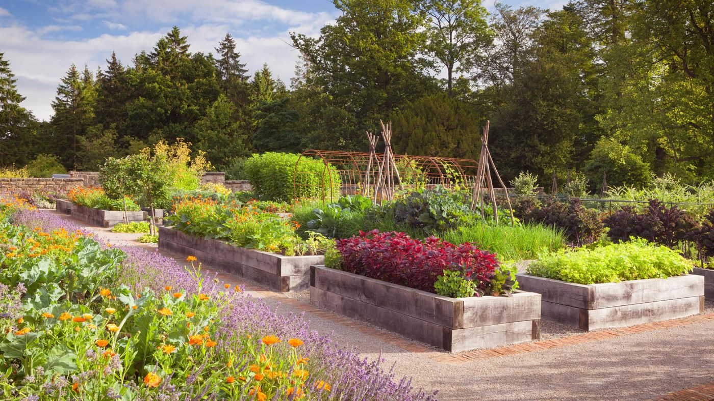
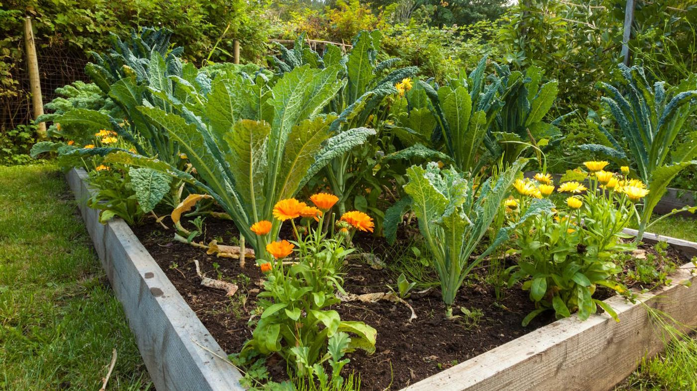

Local Growing Tips
Practical, detailed advice for Ruddington and the East Midlands – written for clay soils, no-dig methods and our climate.

Clay Soil Management
Ruddington sits on heavy Nottinghamshire clay. It holds nutrients well but becomes sticky when wet and hard when dry. The best approach is to work with it rather than against it.
- Never dig or walk on wet clay – it smears and ruins structure for months.
- Add organic matter from the top (compost, leaf mould, well-rotted manure).
- Raised beds or no-dig beds improve drainage and make the soil easier to manage.
- Mulch heavily in autumn to protect the surface over winter.
- In spring, wait until the soil has dried enough before planting – a simple test is whether it sticks to your boots.
No-dig Methods
No-dig is particularly well suited to clay. You build fertility on the surface and let worms do the rest.
- Start with a layer of cardboard on bare soil or grass, then 4–6 inches (10–15 cm) of compost.
- Plant straight into the compost. Each year add another 1–2 inches (2.5–5 cm) of compost on top.
- Weeds are fewer and easier to pull. Soil structure improves year on year.
- Works well on allotments and raised beds. Local sites such as Roots Allotments are set up this way.

No-dig beds
Build soil from the top – perfect for heavy clay.

Raised beds
Better drainage and easier access on clay.
Monthly Jobs (East Midlands focus)
Key tasks for Ruddington and surrounding areas. Adjust slightly for your exact microclimate.
| Month | Main jobs |
|---|---|
| January | Plan beds, order seeds, prune fruit trees (not stone fruit), clean tools. |
| February | Sow early crops under cover, chit potatoes, prepare beds if soil allows. |
| March | Sow hardy seeds outdoors, plant early potatoes, start tomatoes indoors. |
| April | Main sowing season, plant out hardy plants, watch for late frosts. |
| May | Plant tender crops after last frost risk, sow beans, direct-sow salads. |
| June | Plant out remaining tender crops, mulch, start successional sowings. |
| July | Harvest early crops, water carefully, sow autumn/winter crops. |
| August | Main harvest, sow green manures, order garlic. |
| September | Plant garlic, clear summer crops, sow winter salads under cover. |
| October | Mulch beds, plant spring bulbs, lift and store tender crops. |
| November | Clear beds, mulch heavily, plant garlic if not done, protect tender plants. |
| December | Rest, plan next year, protect brassicas from pigeons. |
November focus: Clear spent crops, mulch with compost or leaf mould, plant garlic and spring bulbs, protect tender plants and move pots to shelter, order seed potatoes.
Crop Guides for Nottinghamshire Clay
Potatoes
Excellent on clay once beds are improved. Chit in February/March. Plant early varieties from mid-March, maincrop April. Earth up or mulch. Harvest early from June, maincrop August–September. Store in a cool dark place.
Brassicas (cabbage, kale, broccoli, Brussels)
Love the nutrient-rich clay. Net against pigeons and cabbage white butterflies. Plant out after last frost. Winter kale and sprouts are very reliable here.
Tomatoes
Best under cover (greenhouse, polytunnel or sunny windowsill start). Sow indoors March. Plant out after mid-May. Feed regularly once flowering. Cherry and bush types are easier outdoors in a good summer.
Beans & Peas
Sow peas from March, runner and French beans after mid-May. Provide supports. Climbing beans do well on clay once established. Harvest regularly to keep them producing.
Onions, Garlic & Leeks
Garlic is planted October–November (or early spring). Onions from sets in March/April. Leeks sown spring, planted out summer for autumn/winter harvest. All prefer the improved soil of no-dig beds.
Courgettes & Salads
Courgettes need a sunny spot and plenty of compost – one or two plants usually enough. Salads can be succession-sown from spring through summer. Winter salads under cloches or in a cold frame work well.
Frost Dates & Weather
Typical last frost in the Ruddington / Nottingham area is around mid-May (sometimes earlier, sometimes later). First autumn frost is often late October to early November.
- Protect tender plants (tomatoes, courgettes, beans) until mid-May.
- Use cloches, fleece or a cold frame to extend the season.
- Clay stays cold longer in spring – raised beds warm up faster.
- Heavy rain is common; good drainage (raised or no-dig) is essential.
Local Allotments
- Hareham Gardens (Asher Lane) – traditional plots, owned by James Peacock Bread Charity, low rents.
- Paradise Gardens (Wilford Road area) – includes community/raised beds and social prescribing plots.
- Roots Allotments – newer large no-dig, chemical-free site opened 2024.
All benefit from the same clay-soil and no-dig advice above. Waiting lists vary – check with the relevant organisers or the Parish Council.
These guides are a starting point based on local East Midlands conditions. Members are always welcome to share their own tips at meetings.